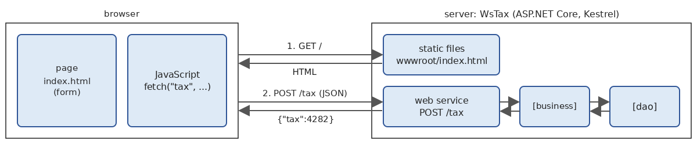

13. Webservices
13.1. Inleiding
In het vorige hoofdstuk hebben we enkele TCP/IP-client-serverapplicaties gepresenteerd. Omdat de clients en de server tekstregels uitwisselen, kunnen ze in elke taal worden geschreven. De client hoeft alleen het communicatieprotocol te kennen dat de server verwacht.
Webservices zijn eveneens serverapplicaties (TCP/IP). Ze hebben de volgende kenmerken:
- ze worden gehost door webservers en het uitwisselingsprotocol tussen client en server is HTTP (HyperText Transfer Protocol), een protocol dat op TCP/IP is gebouwd en dat we in het vorige hoofdstuk hebben behandeld;
- de webservice heeft een standaardcommunicatieprotocol, ongeacht de geleverde dienst. Een webservice biedt verschillende diensten aan: S1, S2…, Sn. Elk van deze diensten verwacht parameters van de client en retourneert een resultaat aan de client. Voor elke dienst moet de client weten:
- hoe hij de dienst Si opgeeft;
- welke parameters moeten worden opgegeven en van welk type die zijn;
- welk type resultaat de dienst retourneert. Zodra deze elementen bekend zijn, verloopt de dialoog tussen client en server in hetzelfde formaat, ongeacht welke webservice wordt bevraagd. Dit standaardiseert de communicatie van de client;
- Om zich tegen aanvallen vanaf internet te beschermen, openen veel organisaties op hun servers slechts bepaalde poorten naar buiten: vooral de poorten 80 (HTTP) en 443 (HTTPS) voor de webservice. Alle andere poorten zijn vergrendeld. Client-serverapplicaties zoals die in het vorige hoofdstuk zijn daardoor doorgaans beperkt tot het privénetwerk (intranet) van de organisatie. Door een dienst op een webserver te hosten, wordt deze toegankelijk voor de hele internetgemeenschap;
- de webservice kan worden gezien als een extern object: de diensten die hij aanbiedt worden dan methoden van dat object. Een client kan dit externe object gebruiken alsof het lokaal is, via een tussenliggend object, een proxy genaamd, dat alle netwerkcommunicatie verbergt. Zo kunnen we een client bouwen die onafhankelijk is van deze laag: als de laag verandert, hoeft de rest van de client niet te worden gewijzigd.
- Net als bij de TCP/IP-client-serverapplicaties uit het vorige hoofdstuk kunnen de client en de server in elke programmeertaal worden geschreven. Ze wisselen tekstregels uit die uit twee delen bestaan: de headers die het HTTP-protocol vereist en de berichttekst, waarvan het formaat tussen de client en de server is afgesproken.
De architectuur van een client-serverapplicatie op basis van webservices ziet er als volgt uit:

Dit is een uitbreiding van de gelaagde architectuur uit hoofdstuk 6, waaraan gespecialiseerde netwerkcommunicatielagen zijn toegevoegd: de webserviceclient aan de clientkant en de webservice zelf aan de serverkant. We zijn al een soortgelijke architectuur tegengekomen bij de TCP-server voor de belastingberekening (versie 8) uit het vorige hoofdstuk.
13.1.1. Gisteren: SOAP en WSDL
In 2008 gebruikte deze cursus de SOAP-webservices van het .NET Framework: [.asmx]-bestanden die met Visual Web Developer waren gemaakt en waarvan de publieke methoden met het attribuut [[WebMethod]] waren gemarkeerd. De client stuurde een HTTP POST-verzoek waarvan de berichttekst een XML-document in SOAP-formaat (Simple Object Access Protocol) was: een „envelop” met de naam van de methode en de parameters ervan. De server antwoordde met een andere XML-envelop die het resultaat bevatte. Elke dienst werd beschreven door een XML-document in WSDL-formaat (Web Services Description Language), beschikbaar op de URL van de dienst gevolgd door [?WSDL]: het vermeldde de methoden, hun parameters en hun typen. Op basis van dit document genereerden tools (de wizard „Add Web Reference” in Visual Studio, [wsimport] in Java) automatisch de proxy van de dienst. Deze technologie, en later de opvolger ervan, WCF (Windows Communication Foundation), werd in de jaren 2000 veel gebruikt. Ze zijn nu verouderd: noch ASMX, noch de serverkant van WCF bestaat in .NET (Core); alleen een communityport, CoreWCF, bestaat om oude applicaties te migreren. De redenen voor deze stopzetting zijn de omslachtigheid van XML en de SOAP-enveloppen, de complexiteit van de bijbehorende standaarden (WS-Security, WS-Addressing enzovoort) en de moeilijkheid om deze diensten vanuit een browser aan te roepen.
13.1.2. Vandaag: REST en JSON
De meeste huidige webservices volgen de REST-stijl (REpresentational State Transfer) en wisselen JSON-documenten uit (JavaScript Object Notation, behandeld in hoofdstuk 5). De REST-stijl berust op de volgende principes:
- de service stelt resources beschikbaar, die elk door een URL worden aangeduid: [/tax], [/clients/12], [/clients/12/orders];
- deze resources worden benaderd met de methoden (ook werkwoorden genoemd) van het HTTP-protocol, die elk een specifieke betekenis hebben;
- het resultaat van de actie wordt aangegeven door de HTTP-statuscode in het antwoord;
- de berichttekst van verzoeken en antwoorden is meestal een JSON-document, dat compacter en eenvoudiger is dan XML;
- De service is stateless: elk verzoek bevat alle informatie die voor de verwerking ervan nodig is; de server slaat voor een bepaalde client geen informatie op van het ene verzoek naar het volgende.
De meest gebruikte HTTP-methoden zijn de volgende:
Methode | Gebruik | Voorbeeld |
GET | Een resource lezen; eventuele parameters staan in de URL | GET /clients/12 |
POST | Een resource aanmaken of een verwerking aanvragen ; de gegevens staan in de berichttekst van het verzoek | POST /clients |
PUT | Een resource vervangen | PUT /clients/12 |
PATCH | Een deel van een resource wijzigen | PATCH /clients/12 |
DELETE | Een resource verwijderen | DELETE /clients/12 |
De statuscodes, die in het vorige hoofdstuk zijn geïntroduceerd, komen hier volledig tot hun recht:
Code | Betekenis |
200 OK | Het verzoek is geslaagd; de berichttekst van het antwoord bevat het resultaat |
201 Created | De resource is aangemaakt; de header [Location] geeft de URL ervan |
204 No Content | Het verzoek is geslaagd; het antwoord heeft geen berichttekst |
400 Bad Request | Het verzoek is ongeldig (ontbrekende of ongeldige parameter enzovoort) |
404 Not Found | De gevraagde resource bestaat niet |
500 Internal Server Error | Er is een onverwachte fout opgetreden op de server |
Een REST-service heeft geen verplichte tegenhanger van WSDL. Het is echter gebruikelijk om hem te beschrijven met een OpenAPI-document (voorheen Swagger), in JSON- of YAML-formaat, waarmee tools documentatie, testpagina’s en clients kunnen genereren. Hier komen we later op terug.
Ten slotte noemen we gRPC, ontworpen door Google: de methoden van de service en hun berichten worden beschreven in een [.proto]-bestand, waaruit tools de server en de client genereren, net zoals in de tijd van WSDL; de berichten worden gecodeerd in een compact binair formaat (Protocol Buffers) en via HTTP/2 verzonden. gRPC is zeer efficiënt en populair voor communicatie tussen services binnen dezelfde organisatie, maar is minder geschikt voor browsers. Het is voor .NET beschikbaar met het pakket [Grpc.AspNetCore], dat wij niet zullen gebruiken.
13.1.3. ASP.NET Core en de Minimal API
Voor het ontwikkelen van onze webservices gebruiken we ASP.NET Core, het .NET-framework voor webontwikkeling, en meer specifiek de Minimal API (.NET 6, 2021): in dit framework worden een URL en een HTTP-methode rechtstreeks aan een C#-functie gekoppeld, meestal een lambda. De webserver is Kestrel, een in C# geschreven HTTP-server die in de applicatie is geïntegreerd: het is niet nodig een aparte webserver te installeren, zoals in 2008 met IIS (Internet Information Services) het geval was. ASP.NET Core maakt deel uit van het gedeelde framework [Microsoft.AspNetCore.App], dat met de .NET SDK wordt geïnstalleerd: er zijn geen NuGet-pakketten voor nodig.
Visual Web Developer, de gratis Microsoft-tool die in 2008 werd gebruikt om webservices te schrijven, bestaat niet meer: de [dotnet]-commando’s volstaan en elke code-editor is bruikbaar (Visual Studio Code, Visual Studio, Rider).
13.2. Een eerste webservice
We gaan een eenvoudige client-serverapplicatie bouwen met de volgende vereenvoudigde architectuur:

De projecten in dit hoofdstuk zijn gegroepeerd in een solution met de naam [13-web-services.slnx], die is aangemaakt met de volgende commando’s, ingevoerd in de map [13-web-services]:
De projecten maken al deel uit van het cursusmateriaal: de map [13-web-services] in het ZIP-bestand bevat de solution en de zes projecten, compleet en gewijzigd zoals in dit hoofdstuk beschreven. De lezer hoeft de bovenstaande commando’s dus niet in te voeren (ze zouden overigens mislukken, omdat de mappen al bestaan): ze laten zien hoe deze projecten zijn aangemaakt en hoe u uw eigen projecten kunt aanmaken. Om een meegeleverd project uit te voeren, gaat u eenvoudig naar de map ervan en typt u [dotnet run] (of opent u [13-web-services.slnx] in Visual Studio of VS Code). Hetzelfde geldt verderop voor de commando’s [dotnet add ... reference] en [dotnet add ... package]: de verwijzingen en pakketten zijn al opgenomen in de meegeleverde [.csproj]-bestanden.
De template [web] van [dotnet new] maakt een leeg ASP.NET Core-applicatieproject aan. De drie webservices in dit hoofdstuk ([WsHello], [WsOperations], [WsTax]) worden met deze template aangemaakt en hun clients met de standaardtemplate [console]. Dit levert de volgende mapstructuur op (alleen de belangrijkste bestanden worden vermeld):
13.2.1. De serverkant

Het projectbestand [WsHello.csproj] dat door [dotnet new web] wordt gegenereerd, ziet er als volgt uit:
Toelichting:
- Regel 1: het enige verschil met een consoleproject is de gebruikte SDK: [Microsoft.NET.Sdk.Web] in plaats van [Microsoft.NET.Sdk]. De web-SDK verwijst naar het gedeelde ASP.NET Core-framework en voegt de namespaces van ASP.NET Core toe aan de impliciete [using]-namespaces ([Microsoft.AspNetCore.Builder], [Microsoft.AspNetCore.Http], [Microsoft.Extensions.DependencyInjection], [Microsoft.Extensions.Logging]…);
- er is geen regel voor [OutputType]: een webapplicatie is altijd een uitvoerbaar bestand.
Het gegenereerde programma [Program.cs] is teruggebracht tot vier instructies:
- Regel 1: [WebApplication.CreateBuilder] bereidt de webapplicatie voor op de build: de methode leest de configuratie ([appsettings.json]-bestanden, omgevingsvariabelen, opdrachtregelargumenten), stelt de logging in en configureert de dependency injection-container die we in hoofdstuk 6 hebben gebruikt. [builder] maakt het mogelijk deze voorbereiding aan te vullen, bijvoorbeeld door services in de container te registreren;
- regel 2: de applicatie wordt gebouwd;
- regel 4: de HTTP-methode [GET] en de URL [/] (de root van de site) worden aan een lambda gekoppeld. Wanneer de server het verzoek [GET /] ontvangt, voert hij de lambda uit en stuurt hij het resultaat, in dit geval de tekst [Hello World!], naar de client;
- Regel 6: de Kestrel-server wordt gestart; hij wacht op verzoeken totdat de applicatie wordt gestopt (Ctrl-C).
De template maakt ook drie configuratiebestanden aan:
- [appsettings.json]: de configuratie van de applicatie;
- [appsettings.Development.json]: waarden die de waarden uit [appsettings.json] overschrijven wanneer de applicatie in de omgeving „Development” draait;
- [Properties/launchSettings.json]: „startprofielen” die door [dotnet run] en door Visual Studio worden gebruikt. Ze bepalen de luisterpoort, die door [dotnet new] willekeurig wordt gekozen (bijvoorbeeld 5273), en de omgevingsvariabele [ASPNETCORE_ENVIRONMENT=Development].
De runtime-omgeving (Development, Staging, Production) wijzigt het gedrag van de applicatie. In de omgeving Development levert een onafgehandelde uitzondering bijvoorbeeld een antwoord op met alle details van de uitzondering, inclusief de aanroepstack: dat is handig voor de ontwikkelaar, maar zou in productie een beveiligingslek zijn. Om ervoor te zorgen dat onze resultaten overeenkomen met wat een gebruiker zou zien, hebben we [launchSettings.json] en [appsettings.Development.json] verwijderd (ze ontbreken dus in de meegeleverde projecten): onze services draaien in de standaardomgeving, Production. De luisterpoort wordt dan ingesteld in [appsettings.json]:
- Regels 2–5: logging: berichten van het niveau [Information] en hoger worden weergegeven, behalve die van ASP.NET Core zelf (categorie [Microsoft.AspNetCore.*]), die tot waarschuwingen ([Warning]) en fouten zijn beperkt;
- regel 8: de machinenamen die worden geaccepteerd in de HTTP-header [Host] van verzoeken; [*] accepteert ze allemaal;
- regel 9: deze regel hebben we toegevoegd: de server luistert op poort 5100 van de machine [localhost]. Het adres kan ook als argument worden doorgegeven: [dotnet run --urls http://localhost:5100], of via de omgevingsvariabele [ASPNETCORE_URLS].
De webservice [WsHello] is een voortzetting van de service uit 2008, waarvan de enige methode, [SayHelloToTheLady], de tekenreeks [Hello Mrs xx] retourneerde. De code ervan, [Program.cs], ziet er als volgt uit:
Toelichting:
- regel 6: de hoofdpagina van de site toont een tekst die uitlegt hoe de service moet worden gebruikt;
- regel 11: de URL-template (de zogeheten route) [/hello/{name}] bevat een routeparameter [{name}]: deze komt overeen met elk URL-segment dat na [/hello/] staat. Zo kent de URL [/hello/Carla%20Bruni] de waarde [Carla Bruni] toe aan [{name}] (de code [%20] staat in een URL voor een spatie). ASP.NET Core geeft deze waarde automatisch door aan de parameter met dezelfde naam in de lambda: dit heet parameterbinding. De webmethode uit 2008 is een URL geworden. De lambda retourneert een tekenreeks: deze wordt ongewijzigd als tekstdocument (type [text/plain]) naar de client gestuurd;
- regel 14: hetzelfde, maar nu retourneert de lambda een object van het type [Greeting]. ASP.NET Core serialiseert dit naar JSON met behulp van [System.Text.Json] (hoofdstuk 5) en stuurt het als document van het type [application/json] naar de client. Dit is het standaardformaat voor het antwoord van een REST-webservice;
- regel 17: de server wacht op verzoeken;
- regel 20: het resultaattype, een [record] (hoofdstuk 4). In een programmeertaal van hoog niveau staan typedeclaraties na de instructies.
De service wordt gestart met het commando [dotnet run], ingevoerd in de projectmap. Hij toont zijn logboek:
- regel 3: de server luistert op poort 5100;
- regel 5: de applicatie is gereed. Ze kan met Ctrl-C worden gestopt;
- regel 7: de runtime-omgeving is Production;
- regel 9: de hoofdmap van de inhoud van de applicatie, waar naar [appsettings.json] en de map [wwwroot] met statische bestanden wordt gezocht. Bij [dotnet run] is dit de projectmap (in de cursus is het begin van het pad vervangen door [...]);
- Regel 11: dit bericht verscheen toen de server met Ctrl-C werd gestopt, na de tests die in de volgende paragrafen worden beschreven.
Elk logbericht vermeldt zijn niveau ([info], [warn], [fail], [crit]…) en zijn categorie, in dit geval [Microsoft.Hosting.Lifetime], gevolgd door een gebeurtenisnummer tussen rechte haken.
13.2.2. De service bevragen met curl
Terwijl de service draait, bevragen we hem in een tweede opdrachtvenster met de tool [curl] die in het vorige hoofdstuk is geïntroduceerd. De optie [-i] toont de headers van het antwoord vóór de berichttekst, en de optie [-s] (silent) onderdrukt de voortgangsbalk:
- regel 2: het verzoek is geslaagd;
- regel 3: het document is tekst (UTF-8);
- regel 6: het document wordt in delen (chunks) verzonden, elk voorafgegaan door zijn grootte: Kestrel hoefde de totale grootte van het document niet te berekenen voordat hij begon te verzenden;
- regel 8: het resultaat van de webmethode.
In 2008 antwoordde de ASMX-service met een XML-document: [<string xmlns="http://st.istia.univ-angers.fr">Hello Mrs Carla Bruni</string>]. Laten we nu de JSON-versie opvragen:
- regel 3: het document is nu van het type [application/json];
- regel 8: het geserialiseerde [Greeting]-object. Merk op dat de namen van de C#-eigenschappen [Name] en [Message] zijn veranderd in [name] en [message]: ASP.NET Core gebruikt de JSON-opties „Web” van [System.Text.Json] ([JsonSerializerDefaults.Web], hoofdstuk 5), die de namen in „camelCase” schrijven, zoals in JavaScript gebruikelijk is.
Een URL die met geen enkele route overeenkomt, levert een 404-antwoord op:
U kunt de URL [http://localhost:5100/hello/Carla Bruni] ook in de adresbalk van een browser typen, die de ontvangen tekst toont: een webservice die met GET wordt bevraagd, is zeer eenvoudig te testen. In 2008 genereerde de ASMX-server voor elke methode een (HTML-)testpagina.
13.2.3. Een consoleclient

Het is mogelijk de client van de service te implementeren met een eenvoudige TCP-client, zoals in het vorige hoofdstuk is getoond: u hoeft alleen het HTTP-verzoek te verzenden en het antwoord te lezen. Wij gebruiken echter de klasse [HttpClient], die eveneens in het vorige hoofdstuk is geïntroduceerd en die het HTTP-protocol voor ons afhandelt. Het project [ClientWsHello] is een standaard consoleproject. Het programma ziet er als volgt uit:
Toelichting:
- regel 1: de namespace voor de extensiemethoden van [HttpClient] die JSON uitwisselen;
- regel 5: de URL van de service wordt als argument doorgegeven of is anders standaard [http://localhost:5100/]. Dit komt overeen met het bestand [app.config] uit 2008, dat het adres van de service bevatte: als dit verandert, hoeft de client niet opnieuw te worden gecompileerd;
- Regel 8: één enkele [HttpClient] voor het hele programma. De eigenschap [BaseAddress] is de basis-URL waaraan de bij de verzoeken horende URL-waarden worden toegevoegd. Let op: de basis-URL moet eindigen op [/] zodat [hello/...] eraan kan worden toegevoegd;
- Regel 22: de ingevoerde naam wordt een segment van de URL. [Uri.EscapeDataString] codeert de tekens die daarin niet zijn toegestaan: een spatie wordt [%20], het teken „é” wordt [%C3%A9]…;
- regel 24: een GET-verzoek waarvan het antwoord als tekenreeks wordt gelezen;
- regel 27: een GET-verzoek waarvan het JSON-antwoord wordt gedeserialiseerd naar een object van het type [Greeting]. De client heeft geen toegang tot het type [Greeting] van de server: hij declareert een eigen type (regel 38), met dezelfde eigenschapsnamen. Bij het deserialiseren worden ook de opties „Web” gebruikt, die hoofdletters in namen negeren: [name] wordt toegewezen aan de eigenschap [Name];
- regel 30: beide methoden genereren een [HttpRequestException] als de service onbereikbaar is of met een foutcode (4xx, 5xx) antwoordt.
Resultaten, met de draaiende service:
Regel 4 toont het ontvangen [Greeting]-object in het formaat van de methode [ToString] die voor het [record] is gegenereerd. Als een adres wordt opgegeven waarop geen enkele service luistert, wordt de verbinding geweigerd:
In 2008 gebruikte de client een proxy van de klasse [ServiceSoapClient], die door Visual Studio uit de WSDL van de service was gegenereerd, en riep hij de externe methode aan alsof het een lokale methode was: [new ServiceSoapClient().SayHelloToTheLady("Carla Bruni")]. Hier roepen we rechtstreeks de URL van de service aan. Voor de service voor de belastingberekening schrijven we een echte proxy.
13.2.4. De beschrijving van de service: OpenAPI
Het WSDL-document uit 2008 beschreef de service in een gestandaardiseerd formaat. De huidige tegenhanger is het OpenAPI-document. Sinds versie 9 van .NET kan ASP.NET Core dit uit de gedeclareerde routes genereren met behulp van het pakket [Microsoft.AspNetCore.OpenApi]:
Het document [/openapi/v1.json] beschrijft dan elke route: de URL, de HTTP-methode, de parameters en hun typen, en het JSON-schema van de antwoorden. Tools zoals Swagger UI of Scalar genereren daaruit een testwebpagina, en generatoren zoals Kiota of NSwag genereren een getypeerde client in diverse talen, net zoals de wizard „Add Web Reference” dat met de WSDL deed. Omdat het pakket [Microsoft.AspNetCore.OpenApi] op onze testmachine (die geen internettoegang heeft) niet beschikbaar is, kunnen we het gegenereerde document niet tonen.
13.3. Een webservice voor rekenkundige bewerkingen
De vorige service bood één enkele methode aan. We bekijken nu, zoals in 2008, een webservice die de vier rekenkundige bewerkingen aanbiedt: add(a, b), subtract(a, b), multiply(a, b) en divide(a, b). We benutten deze gelegenheid om de twee manieren te bestuderen waarop parameters aan een webservice kunnen worden doorgegeven en hoe fouten worden gemeld.
13.3.1. De serverkant
De service [WsOperations]accepteert twee soorten verzoeken:
Verzoek | Parameters |
GET /add?a=1.5&b=2 | De bewerking in het URL-pad, de getallen in de queryreeks |
POST /calculation | een JSON-document in de berichttekst van het verzoek: [{"operation":"add","a":1.5,"b":2}] |
In beide gevallen is het antwoord een JSON-document: [{"operation":"add","a":1.5,"b":2,"result":3.5}]. GET is geschikt voor eenvoudige verzoeken die op de server niets wijzigen: de URL kan in een browser worden getypt en als bladwijzer worden opgeslagen, en het antwoord kan in de cache worden bewaard. POST is geschikt voor omvangrijke of gestructureerde gegevens. Het bestand [appsettings.json] is identiek aan dat van [WsHello], behalve de poort (5110). Het programma ziet er als volgt uit:
Toelichting:
- Regel 6: de service die foutantwoorden in het formaat Problem Details genereert, wordt geregistreerd. Dit formaat, gestandaardiseerd door RFC 9457, is een JSON-document van het type [application/problem+json] dat een fout beschrijft: het type, een titel, de statuscode, een toelichting en eventuele aanvullende informatie. Dit is de standaardmanier waarop een REST-service aangeeft wat er mis is;
- Regel 9: we installeren middleware, dat wil zeggen een schakel in de verwerkingsketen waar elk verzoek doorheen gaat. Deze middleware voegt een „Problem Details”-berichttekst toe aan foutantwoorden die er geen hebben, zoals de 404-antwoorden die ASP.NET Core genereert voor verzoeken met een onbekende URL;
- Regels 13–14: het GET-verzoek. De parameter [operation] in de lambda wordt gebonden aan de routeparameter [{operation}]. De parameters [a] en [b], die niet in de route voorkomen, worden gekoppeld aan de parameters met dezelfde naam in de queryreeks ([?a=1.5&b=2]). Ze zijn gedeclareerd als type [string?]: een ontbrekende parameter wordt behandeld als [null]. We hadden ze ook als type [double] kunnen declareren: ASP.NET Core zou de conversie dan zelf hebben uitgevoerd en een ontbrekende of onjuiste waarde zonder uitleg met een 400-antwoord hebben afgewezen. Door ze als tekenreeksen te ontvangen, houden we de controle over de foutmeldingen;
- regels 18–19: het POST-verzoek. De parameter [request] is van een complex type ([CalculationRequest], regel 72): ASP.NET Core deserialiseert deze uit de JSON-berichttekst van het verzoek. De eigenschappen ervan zijn nullable: een eigenschap die in het JSON-document ontbreekt, krijgt de waarde [null];
- regels 25–26: de conversie van een tekenreeks naar een getal; als deze mislukt, is het resultaat [null]. Zowel in de URL als in JSON worden getallen met een decimale punt geschreven: de conversie gebeurt met de invariante cultuur (hoofdstuk 5), niet met de cultuur van de server, die een komma zou kunnen verwachten (bijvoorbeeld de Franse cultuur). De lokale functies [ReadNumber] en [Calculate] worden na [app.Run] gedeclareerd; ze zijn statisch ([static]) omdat ze geen variabelen uit het hoofdprogramma gebruiken;
- regels 33–39: de gevraagde bewerking wordt weergegeven door een delegate (hoofdstuk 7) die door een [switch]-expressie wordt geselecteerd: één lambda per bewerking; [null] voor een onbekende bewerking;
- regels 42–53: de drie parameters worden gecontroleerd door fouten te verzamelen in een dictionary die elke parameter koppelt aan zijn lijst met foutmeldingen;
- regel 55: als er een fout is gevonden, wordt een 400-antwoord geretourneerd. Het filteren met het patroon [a is not double x] is waar als [a] gelijk is aan [null]; anders wordt de waarde van [a] toegewezen aan de variabele [x]. De compiler weet dat na deze [if] [calculation], [x], en [y] waarden hebben: hij geeft geen waarschuwingen;
- regel 58: de statische klasse [Results] retourneert de gebruikelijke antwoorden. [ValidationProblem] retourneert een 400-antwoord in het formaat „Problem Details” dat de validatiefouten bevat (eigenschap [errors]);
- regels 62–65: deling door nul wordt met een 400-antwoord in het formaat „Problem Details” afgewezen, gegenereerd door [Results.Problem]. Deze afwijzing is nodig: in C# genereert het delen van een [double] door nul geen uitzondering maar retourneert het oneindig ([double.PositiveInfinity]), wat een JSON-document niet kan weergeven. De service uit 2008, die deze controle niet uitvoerde, zou oneindig hebben geretourneerd, wat de XML-serialisatie van .NET schrijft als [INF];
- regel 68: het 200-antwoord, waarvan de berichttekst het naar JSON geserialiseerde object [CalculationResult] is;
- regels 72–74: de twee typen die met clients worden uitgewisseld. Deze objecten, die uitsluitend dienen om gegevens tussen twee applicaties te vervoeren, heten DTO (Data Transfer Object). [record]-objecten zijn hiervoor ideaal.
De methode [Calculate] retourneert een object van het type [IResult]: dit is de interface voor de objecten die door [Results] worden geproduceerd. Elk daarvan schrijft het bijbehorende HTTP-antwoord (statuscode, headers, berichttekst).
13.3.2. Testen met curl
De service wordt gestart met [dotnet run] in de map [WsOperations]. Een optelling:
Deling door nul:
- Regel 2: het verzoek wordt afgewezen;
- regel 3: de berichttekst is een „Problem Details”-document;
- regel 8: het document bevat de eigenschappen [type] (een URL die het type fout documenteert, in dit geval de paragraaf van RFC 9110 die code 400 definieert), [title], [status] en [detail], die door onze aanroep van [Results.Problem] zijn ingesteld, en [traceId], een unieke identificatie van het verzoek waarmee het in de serverlogboeken kan worden teruggevonden.
Een onbekende bewerking, een getal met een decimale komma en een ontbrekend getal:
De eigenschap [errors] van het document bevat de validatiefouten, parameter voor parameter. Nu een POST-verzoek. De optie [-d] van [curl] stuurt de tekst die erop volgt in de berichttekst van een POST-verzoek, en de optie [-H] voegt een header aan het verzoek toe, in dit geval het type van het verzonden document:
Als het verzonden JSON-document onjuist is, kan ASP.NET Core de parameter [request] niet opbouwen: het antwoordt dan zelf met een 400-fout, zonder onze lambda uit te voeren:
Het „Problem Details”-document op regel 8 is gegenereerd door de middleware [UseStatusCodePages]. In de omgeving Development zou het de volledige beschrijving van de deserialisatiefout bevatten.
13.3.3. De clientkant
De grafische client uit 2008 had een lijst met bewerkingen, twee invoervelden en een knop. Onze consoleclient vraagt de gebruiker om de bewerking en de twee getallen op één regel en bevraagt de service daarna twee keer: eerst met GET en daarna met POST, om beide methoden te demonstreren. Hier is het programma:
Toelichting:
- regels 25–32: de getallen worden lokaal gevalideerd voordat de service wordt aangeroepen, zoals de grafische client uit 2008 deed. Ze worden met een decimale punt ingevoerd (cultuur en-US);
- regels 40–41: de URL van het GET-verzoek. Getallen moeten daarin met een punt worden geschreven: omdat de interpolatie [$"..."] de huidige landinstelling gebruikt, wordt de tekenreeks opgebouwd met [string.Create], dat de te gebruiken landinstelling ontvangt, in dit geval de invariante landinstelling;
- regel 45: het GET-verzoek en de deserialisatie van het JSON-antwoord naar een [CalculationResult]-object. Als de statuscode van het antwoord geen succescode (2xx) is, genereert [GetFromJsonAsync] een [HttpRequestException]: de berichttekst van het antwoord, die de fout toelicht, gaat dan verloren;
- regel 51: de eigenschap [StatusCode] van de uitzondering bevat de statuscode van het antwoord, of [null] als de service niet heeft geantwoord (service onbereikbaar);
- regel 57: het POST-verzoek: het object [CalculationRequest] wordt als JSON in de berichttekst van het verzoek geserialiseerd. [PostAsJsonAsync] genereert bij een foutcode geen uitzondering: het retourneert het antwoord ([HttpResponseMessage]), dat we onderzoeken;
- regel 58: [true] voor een 2xx-code;
- regel 61: bij succes wordt de berichttekst gedeserialiseerd naar een [CalculationResult]-object;
- regels 67–75: als het verzoek mislukt, is de berichttekst een „Problem Details”-document, dat wordt gedeserialiseerd naar een [Problem]-object (regel 90), waaruit de titel, de details en de validatiefouten worden weergegeven. De [foreach]-lus ontleedt elk element van de dictionary [Errors] in een tuple (hoofdstuk 5); [?? []] vervangt een ontbrekende dictionary door een lege collectie;
- regels 87–90: de DTO-bestanden van de client. Ze worden hier opnieuw gedeclareerd: een client deelt niet de code van de server, alleen het formaat van de uitgewisselde JSON-documenten. ASP.NET Core biedt weliswaar een klasse [ProblemDetails], maar die maakt deel uit van het webframework; voor de client volstaat een eenvoudig [record] .
Resultaten, met de draaiende service:
- regel 3: de URL van het GET-verzoek: het ingevoerde getal 1.5 wordt geschreven als 1.5;
- Regels 6–8: dezelfde fout wordt bij beide verzoeken waargenomen: [GetFromJsonAsync]herkent alleen de code 400, terwijl het lezen van het POST-antwoord de uitleg van de service zichtbaar maakt;
- regels 11–12: de onbekende bewerking is door de service gedetecteerd;
- regel 14: het onjuiste getal is door de client gedetecteerd, die de service niet heeft bevraagd.
13.4. Voorbeeldapplicatie, versie 9: een webservice voor de belastingberekening
We komen terug op de applicatie voor de belastingberekening. In het vorige hoofdstuk (versie 8) hadden we een TCP-server gemaakt die op afstand kon worden bevraagd, met een eigen communicatieprotocol. Nu maken we er een REST-webservice van.
13.4.1. De architectuur
De architectuur van versie 9 ziet er als volgt uit:

- aan de serverkant ontvangt de webservice [WsTax] HTTP-verzoeken en laat deze verwerken door de lagen [business] en [dao] uit versie 5 (hoofdstuk 6), die ongewijzigd worden hergebruikt;
- aan de clientkant wordt de [ui]-laag uit versie 5 eveneens ongewijzigd hergebruikt. Zij communiceert met een nieuw soort [business]-laag, [TaxBusinessHttp], die de interface [ITaxBusiness] implementeert door de webservice te bevragen: zij fungeert als proxy voor de service. De [ui]-laag weet niet dat de berekening op een andere machine wordt uitgevoerd;
- aan beide kanten wordt de integratie van de lagen verzorgd door de dependency injection-container, die Spring.NET vervangt, dat in 2008 werd gebruikt.
13.4.2. De webservice
Het servicecontract is als volgt:
Verzoek | Antwoord bij succes | Antwoord bij een fout |
GET /tax?married=y&children=2&salary=60000 | 200: [{"tax":4282}] | 400: „Problem Details”-document |
POST /tax met de berichttekst [{"married":true,"children":2,"salary":60000}] | 200: [{"tax":4282}] | 400: „Problem Details”-document |
Project [WsTax] verwijst naar de projecten van de lagen [dao] en [business] uit versie 5:
- Regels 11–12: de twee projectverwijzingen. Ze worden toegevoegd met het commando [dotnet add WsTax reference ../06-architectures/TaxV5/Tax.Dao ../06-architectures/TaxV5/Tax.Business], ingevoerd in de map [13-web-services] (niet nodig voor het meegeleverde project, waar ze al aanwezig zijn). De gegevensbestanden [TaxData.txt] en [TaxData.json] van het project [Tax.Dao] worden naast het uitvoerbare bestand van de service gekopieerd (hoofdstuk 6).
In 2008 moesten de DLL-bestanden van de lagen naar een map [lib] op de website worden gekopieerd en aan de verwijzingen van het project worden toegevoegd. Het configuratiebestand [appsettings.json] ziet er als volgt uit:
- regel 9: de service luistert op poort 5120;
- regels 10–12: de configuratie voor de [dao]-laag, in hetzelfde formaat als in het bestand [appsettings.json] van versie 5: de te gebruiken implementatie en het bijbehorende gegevensbestand. Hier gebruiken we het JSON-bestand.
Het programma van de service ziet er als volgt uit:
Toelichting:
- Regels 10–11: de configuratie van de [dao]-laag wordt gelezen uit [builder.Configuration]. Dit object combineert alle configuratiebronnen: het bestand [appsettings.json], omgevingsvariabelen en opdrachtregelargumenten. In hoofdstuk 6 moesten we zelf een [ConfigurationBuilder] bouwen; ASP.NET Core doet dit voor ons;
- regels 12–20: het registreren van de lagen [dao] en [business] in de dependency injection-container van ASP.NET Core, [builder.Services]. Deze regels komen uit het hoofdprogramma van versie 5: de container is dezelfde ([IServiceCollection]); het enige verschil is waar hij vandaan komt. In 2008 werd deze integratie verzorgd door Spring.NET, geconfigureerd in het bestand [web.config];
- Regels 28–35: beide lagen zijn singletons, die door de container bij het eerste verzoek worden aangemaakt. We forceren dit aanmaken meteen bij het opstarten, vóór de verwerking van verzoeken: als het gegevensbestand ontbreekt of onjuist is, stopt de service onmiddellijk met een duidelijke melding, in plaats van op alle verzoeken een 500-fout te retourneren. Dit is de rol die de methode [Application_Start] in het bestand [Global.asax] in 2008 vervulde. [app.Logger] is het applicatielogboek; [LogCritical] schrijft er een bericht van kritiek niveau naartoe. De berichttekst is een template: [{Message}] en [{Cause}] worden in volgorde vervangen door de volgende argumenten. In tegenstelling tot een stringinterpolatie stelt de template logtools in staat elke waarde afzonderlijk vast te leggen;
- regel 39: een middlewarecomponent die een onafgehandelde uitzondering omzet in een 500-antwoord in het formaat „Problem Details”, zonder de details prijs te geven;
- regels 43–44: twee middlewarecomponenten voor de webclient die in de volgende paragraaf wordt beschreven. [UseStaticFiles] levert de bestanden uit de map [wwwroot] van het project (HTML-pagina’s, afbeeldingen, scripts enzovoort); [UseDefaultFiles] levert het document [index.html] voor de URL [/]. Dit zijn dezelfde regels als voor elke website: één server kan zowel een website als een webservice hosten;
- regels 47–52: het GET-verzoek. De parameter [business] van de lambda staat noch in de route, noch in de queryreeks: ASP.NET Core vindt hem in de dependency injection-container, die de laag [business] levert. De andere drie parameters zijn tekenreeksen, die door de lambda worden geconverteerd: [y]/[n] voor [married], gehele getallen voor [children] en [salary], en [null] bij een fout;
- Regels 55–56: het POST-verzoek: de JSON-berichttekst wordt gedeserialiseerd naar een [TaxRequest]-object (regel 92), waarvan de nullable eigenschappen het mogelijk maken ontbrekende waarden te detecteren. Dezelfde URL [/tax] wordt aan twee lambda’s gekoppeld, afhankelijk van de HTTP-methode van het verzoek;
- regel 59: [app.Run] geeft de besturing pas terug wanneer de server wordt afgesloten. Omdat het programma een instructie [return 1] bevat, moet het ook bij normaal beëindigen een code retourneren;
- Regel 63: de lokale functie die beide verzoeken verwerkt. Ze is niet statisch omdat ze de variabele [app] uit het hoofdprogramma gebruikt voor de logging. Het retourtype, [Results<Ok<TaxResponse>, ValidationProblem>], somt de mogelijke antwoorden op: een 200-antwoord met een [TaxResponse]-object, of een 400-validatieantwoord. Deze typen zijn gedefinieerd in de namespace [Microsoft.AspNetCore.Http.HttpResults] (regel 4) en hun objecten worden aangemaakt door de klasse [TypedResults] (regels 71 en 88): dit is de getypeerde versie van de klasse [Results] die [WsOperations] gebruikt. Hier komen we in de aanvullende opmerkingen op terug;
- regel 66: een op patronen gebaseerd filter dat de drie parameters controleert en ze, als ze correct zijn, toekent aan de variabelen [isMarried], [nbChildren] en [amount]. [children is int nbChildren and >= 0] is waar als [children] niet [null] is en positief of nul is (relationele en logische patronen uit C# 9);
- regel 68: de berekening wordt gedelegeerd aan de laag [business] van versie 5;
- regel 69: elke berekening wordt gelogd;
- regels 74–88: bij een fout wordt de lijst met fouten opgebouwd, wordt een waarschuwing ([LogWarning]) gelogd en wordt een 400-antwoord geretourneerd;
- regel 79: [children is not >= 0] is waar als [children] gelijk is aan [null] of negatief is;
- Regels 92–94: de DTO’s van de service.
In 2008 was de webservice een object dat voor elk verzoek werd aangemaakt en daarna weer werd vernietigd: hij kon tussen verzoeken geen toestand bewaren. Hier is dat net zo: de lambda’s worden voor elk verzoek uitgevoerd en bewaren geen toestand. Alleen de singletons [ITaxDao] en [ITaxBusiness], die eenmalig worden aangemaakt, blijven gedurende de hele applicatie bestaan; ze worden gedeeld door alle verzoeken, die gelijktijdig door verschillende threads kunnen worden verwerkt. Dat is hier geen probleem omdat deze objecten na het aanmaken nooit meer worden gewijzigd: de belastingschijven worden eenmalig ingelezen. De container van ASP.NET Core kent drie levensduren: [AddSingleton] (één object voor de hele applicatie), [AddScoped] (één object per HTTP-verzoek) en [AddTransient] (één object voor elk verzoek aan de container).
13.4.3. Uitvoering van de service
Laten we beginnen met een configuratiefout. Opdrachtregelargumenten in de vorm [--Key=value] maken deel uit van de configuratie van de applicatie en overschrijven de waarden uit [appsettings.json]; het teken [:] scheidt de niveaus van de hiërarchie. We geven een niet-bestaand gegevensbestand op:
De service stopt nog voordat hij zijn luisterpoort opent. De uitzonderingsberichten van de [dao]-laag (hoofdstuk 6) zijn in het Engels, net als die van .NET. Laten we de service nu normaal starten met [dotnet run] en hem vervolgens bevragen met [curl]:
Dit is de verwachte controlewaarde: een gehuwde belastingplichtige met twee kinderen en een jaarsalaris van 60.000 euro betaalt 4.282 euro belasting (let op: het gebruikte belastingtarief, dat van 2004, wordt alleen voor dit belastingjaar aangehouden). Met onjuiste parameters:
Daarna met POST en een JSON-document:
Het logboek van de service wordt aan het eind van het hoofdstuk getoond: het bevat een overzicht van alle opgevraagde berekeningen.
13.4.4. De consoleclient: een nieuwe [business]-laag
De client van versie 9 hergebruikt de [ui]-laag uit versie 5 zonder die te wijzigen: de klasse [Ui.Dialog], waarvan de methode [Run(ITaxBusiness business)] met de gebruiker communiceert en berekeningen opvraagt bij de laag [business] die eraan wordt doorgegeven. U hoeft hem alleen een laag met de naam [business] door te geven die de webservice bevraagt. Het project [ClientWsTax] ziet er als volgt uit:
- Regels 12–13: verwijzingen naar projecten uit versie 5: [Tax.Business] voor de interface [ITaxBusiness] en [Tax.Ui] voor de klasse [Dialog]. Een project kan naar een uitvoerbaar project verwijzen: in dat geval gebruikt het de publieke klassen ervan zonder het hoofdprogramma uit te voeren. Het project [Tax.Dao] wordt indirect (via [Tax.Business]) gebruikt: de client gebruikt daaruit alleen de klasse [TaxException];
- regel 18: dit pakket integreert het aanmaken van [HttpClient]-objecten in de dependency injection-container. De verwijzingen en het pakket worden in de map [13-web-services] toegevoegd met de commando’s [dotnet add ClientWsTax reference ../06-architectures/TaxV5/Tax.Business ../06-architectures/TaxV5/Tax.Ui] en [dotnet add ClientWsTax package Microsoft.Extensions.Http --version 10.0.12] (die voor het meegeleverde project overbodig zijn). Het pakket [Microsoft.Extensions.DependencyInjection] wordt al door het project [Tax.Ui] geleverd.
De nieuwe laag [business] is de klasse [TaxBusinessHttp]:
Toelichting:
- regel 10: de klasse implementeert de interface [ITaxBusiness] uit versie 5. Zij ontvangt via haar primaire constructor (hoofdstuk 4) een [HttpClient] waarvan de basis-URL die van de service is;
- regels 15–17: het verzoek [POST tax]. De berichttekst ervan is een [JsonContent]-object, dat het object [TaxRequest] met de opties „Web” naar JSON serialiseert;
- regel 20: het verzoek wordt synchroon verzonden (zie hieronder);
- regels 22–26: een foutantwoord wordt omgezet naar [TaxException], de applicatie-uitzondering van [Tax], waarvan de code de HTTP-statuscode is;
- regels 30–31: de berichttekst van het antwoord wordt synchroon als stream gelezen en gedeserialiseerd naar een [TaxResponse]-object. [JsonSerializerOptions.Web] (.NET 9) verwijst naar de opties „Web”.
- regels 36–37: de DTO-objecten, binnen de klasse gedeclareerd ([private]) omdat niemand anders ze gebruikt.
Dit is precies wat de klasse [ImpotMetierWs] uit 2008 deed, die [IImpotMetier] implementeerde door de berekening te delegeren aan de door Visual Studio gegenereerde proxy [ServiceImpotSoapClient]: het verschil is dat we de tien of zo regels van de proxy nu zelf schrijven.
Er doet zich één probleem voor: de methode [CalculateTax] van de interface [ITaxBusiness] is synchroon (zij retourneert een [int]), terwijl de standaardmethoden van [HttpClient] ([GetFromJsonAsync], [PostAsJsonAsync]…) asynchroon zijn (ze retourneren een [Task]; zie hoofdstuk 9). Er zijn drie mogelijke oplossingen:
- de asynchrone methode aanroepen en blokkerend op het resultaat wachten: [client.PostAsJsonAsync(...).GetAwaiter().GetResult()]. Dit heet „sync over async”. Het werkt in een consoleapplicatie, maar blokkeert een thread die alleen maar wacht en kan deadlocks veroorzaken in applicaties met een synchronisatiecontext (grafische gebruikersinterfaces, oudere ASP.NET-versies). Deze oplossing moet worden vermeden;
- de synchrone methoden van [HttpClient] gebruiken: [Send] (sinds .NET 5) verzendt het verzoek en retourneert het antwoord, en [HttpContent.ReadAsStream] leest de berichttekst ervan. De thread wordt tijdens de uitwisseling geblokkeerd, wat het te verwachten gedrag van een synchrone methode is, maar zonder omweg via een asynchrone taak. Dit is de oplossing die we hebben gekozen: ze respecteert de bestaande interface en maakt zo het hergebruik van de [ui]-laag mogelijk;
- de interface asynchroon maken: [Task<int> CalculateTaxAsync(bool married, int nbChildren, int salary)]. Dit is de beste oplossing voor een applicatie die een groot aantal gebruikers moet bedienen, maar het vereist wijziging van de interface [ITaxBusiness], de implementaties ervan en de [ui]-laag: alle lagen worden asynchroon. Wij hebben dit niet gedaan om de lagen uit versie 5 intact te houden.
Het hoofdprogramma van de client integreert de volgende lagen:
Toelichting:
- regel 7: de URL van de service, als argument doorgegeven of standaard [http://localhost:5120/];
- regel 10: de dependency injection-container, zoals in versie 5;
- regel 13: de methode [AddHttpClient] uit het pakket [Microsoft.Extensions.Http] registreert [TaxBusinessHttp] als implementatie van [ITaxBusiness], als „getypeerde client”: wanneer de container een [TaxBusinessHttp] aanmaakt, geeft hij aan de constructor ervan een [HttpClient] door die door de lambda is geconfigureerd, in dit geval met de basis-URL van de service. [HttpClient]s worden geproduceerd door een factory ([IHttpClientFactory]) die de onderliggende netwerkverbindingen hergebruikt: dit is de aanbevolen manier om [HttpClient]s aan te maken in een applicatie die dependency injection gebruikt;
- regel 15: hiermee wordt de [business]-laag verkregen;
- regel 20: de dialoog van versie 5, zonder wijzigingen;
- regels 22–26: als de service niet bereikt kan worden, plant de uitzondering zich voort vanuit de [business]-laag via de [ui]-laag, die haar niet afhandelt: ze wordt weergegeven met de methode [Dialog.DisplayError] uit versie 5 en het programma wordt beëindigd.
Resultaten, met de draaiende service:
De controlewaarden voor de belastingberekening zijn de volgende: 4.282, 2.959 en 11.519 euro. De onjuiste invoer op regel 8 is gedetecteerd door de laag [ui], die de laag [business] niet heeft aangeroepen: de service heeft alleen correcte verzoeken ontvangen. Als de service wordt gestopt:
De uitzondering [HttpRequestException], die door de methode [Send] wordt gegenereerd, kapselt de uitzondering [SocketException] van de TCP-laag in (hoofdstuk 12).
13.5. Een webclient voor de service voor de belastingberekening
In 2008 ontwikkelde de cursus vervolgens een webclient voor de service: een ASP.NET Web Forms-applicatie waarvan de pagina [Default.aspx] een formulier toonde; telkens wanneer op de knop [Calculer] werd geklikt, werd het formulier naar de webserver gestuurd, die de externe webservice bevroeg en een nieuwe, volledige pagina met het belastingbedrag naar de browser terugstuurde. ASP.NET Web Forms bestaat niet in .NET (Core). Tegenwoordig bevraagt de browser meestal zelf de webservice, in JavaScript, en werkt alleen het gewijzigde deel van de pagina bij. De architectuur is nu als volgt:

- 1: de browser vraagt de pagina [/] op; de server [WsTax] stuurt het statische bestand [wwwroot/index.html] (met behulp van de middlewarecomponenten [UseDefaultFiles] en [UseStaticFiles] uit het programma ervan);
- 2: telkens wanneer op de knop [Calculate] wordt geklikt, stuurt de JavaScript-code op de pagina het verzoek [POST /tax] naar de webservice en toont het ontvangen belastingbedrag op de pagina zonder deze opnieuw te laden.
De webservice is niet gewijzigd: hij levert alleen één extra bestand. De pagina [index.html] ziet er als volgt uit:
1 2 3 4 5 6 7 8 9 10 11 12 13 14 15 16 17 18 19 20 21 22 23 24 25 26 27 28 29 30 31 32 33 34 35 36 37 38 39 40 41 42 43 44 45 46 47 48 49 50 51 52 53 54 55 56 57 58 59 60 61 62 63 64 65 66 67 68 69 70 71 72 73 74 75 76 77 78 79 80 81 82 83 84 85 86 87 88 89 90 91 92 93 94 95 96 97 98 99 100 101 102 103 104 105 106 107 108 109 110 | |
Toelichting:
- regels 15–44: het formulier, vergelijkbaar met de versie uit 2008: twee keuzerondjes voor de burgerlijke staat, twee invoervelden voor het aantal kinderen en het inkomen, elk gevolgd door een cel waarin een eventuele foutmelding wordt getoond, een veld voor het belastingbedrag, een alinea voor een algemene melding en twee knoppen;
- regels 46–108: de code van de pagina, JavaScript, die door de browser wordt uitgevoerd. De cursus behandelt JavaScript niet; deze code lijkt echter genoeg op C# om gemakkelijk te kunnen worden begrepen;
- regel 57: een invoer die geen geheel getal is, levert [null] op; het is aan de service om de fout te melden;
- regel 70: de klikhandler van de knop [Calculate] (formulier verzenden). Dit is een asynchrone functie ([async]), vergelijkbaar met de asynchrone methoden in C# (Hoofdstuk 9);
- Regel 71: hiermee wordt voorkomen dat de browser het formulier zelf verzendt, waardoor een nieuwe pagina zou worden geladen;
- regels 74–77: het verzoek, een JavaScript-object met de indeling die [POST /tax] verwacht;
- regels 80–83: de functie [fetch] van de browser verzendt het HTTP-verzoek: de methode [POST], de header [Content-Type] en de body, het verzoek dat door [JSON.stringify] naar JSON is geserialiseerd. De URL [tax] is relatief ten opzichte van de pagina: het verzoek wordt verzonden naar de server die de pagina heeft geleverd. [await] wacht op het antwoord zonder de browser te blokkeren;
- regel 85: de body van het antwoord wordt gedeserialiseerd naar een object;
- regels 86–88: bij succes (code 2xx) wordt het belastingbedrag weergegeven;
- regels 91–94: als er een fout optreedt, wordt de documenttitel „Problem Details” weergegeven, samen met foutmeldingen over het aantal kinderen en het salaris, elk naast het bijbehorende invoerveld. De operatoren [?.] en [??] hebben dezelfde betekenis als in C#;
- regels 103–106: de knop [Clear] zet het formulier lokaal terug, zonder de service aan te roepen.
Nu de service draait, vragen we de URL [http://localhost:5120/] op met een browser:

Nadat een berekening is ingevoerd en op de knop [Calculate] is geklikt:

Als de invoer onjuist is, zijn de foutmeldingen die van de webservice:

Deze schermafbeeldingen zijn gemaakt met de browser Chromium, aangestuurd door een programma via de bibliotheek Playwright: zo automatiseren we het testen van een webinterface.
Hier delen de pagina en de service dezelfde origin (zelfde protocol, zelfde machine, zelfde poort: [http://localhost:5120]). Als de pagina door een andere site zou worden aangeboden, bijvoorbeeld [http://localhost:5000], zou de browser het same-origin-beleid afdwingen: de browser zou het JavaScript alleen toestaan het antwoord van de service te lezen als de service dit toestaat via de header [Access-Control-Allow-Origin]. Bij een verzoek als het onze (POST met een JSON-body) zou de browser deze toestemming zelfs vragen voordat het verzoek wordt verzonden, via een voorafgaand verzoek met de methode OPTIONS (preflight). Dit is het mechanisme CORS (Cross-Origin Resource Sharing), dat de gebruiker beschermt tegen kwaadaardige pagina's die buiten medeweten van de gebruiker zouden kunnen proberen services te gebruiken waarbij de gebruiker is aangemeld. Om andere origins te accepteren, moet de service ze declareren met [builder.Services.AddCors] en de bijbehorende middleware installeren met [app.UseCors]. Clients die geen browser zijn ([curl], onze consoleclients) hebben geen last van CORS.
Tot slot: vanaf .NET 9 kan [app.MapStaticAssets()] vervangen door [app.UseStaticFiles()]: statische bestanden worden dan tijdens het compileren geïdentificeerd en gecomprimeerd en geleverd met geoptimaliseerde cacheheaders. Voor rijkere webinterfaces biedt ASP.NET Core Razor Pages, MVC en Blazor, die in deze cursus niet aan bod komen.
13.6. Een webservice is onafhankelijk van de programmeertaal van de client
In 2008 werd de cursus afgesloten met een Java-client voor de belastingberekeningsservice, waarvan de proxy door de IDE NetBeans werd gegenereerd op basis van de WSDL van de service. Het was zelfs nodig om de parameter [marié] van de service te hernoemen naar [marie], omdat het accent een interoperabiliteitsprobleem veroorzaakte. Met een REST/JSON-service kan elke taal met een HTTP-client en een JSON-bibliotheek, dus alle huidige talen, de service aanroepen zonder speciale hulpmiddelen. Dat hebben we al gezien met [curl], dat noch in C# noch in Java is geschreven, en met het JavaScript in de browser. Hier is een client voor Node.js, de runtime-omgeving voor JavaScript buiten de browser:
- regel 3: de URL van de service, doorgegeven als argument of ingesteld op de standaardwaarde;
- regels 6–9: drie berekeningsverzoeken, waarvan het laatste onjuist is;
- regels 14–17: dezelfde functie [fetch] als in de browser;
- regels 20–23: weergave van het belastingbedrag of van de fouten.
Zodra de service draait:
In Java zou u op dezelfde manier de klasse [java.net.http.HttpClient] gebruiken; in Python de module [requests] of [httpx] . Hier volgt tot slot het logboek van de service [WsTax] tijdens alle tests in dit hoofdstuk ([curl], consoleclient, browser, Node.js-client), tot hij met Ctrl-C werd gestopt:
- De berichten van de service hebben de categorie [WsTax]; de naam van de applicatie, de logcategorie [app.Logger];
- De regels [info] registreren de berekeningen, terwijl de regels [warn] ongeldige verzoeken registreren, samen met de namen van de betrokken parameters.
13.7. Aanvullende informatie
13.7.1. Getypeerde resultaten: TypedResults
De service [WsOperations] gebruikt de klasse [Results], waarvan alle methoden het type [IResult] teruggeven: op basis van de signatuur van [Calculate] is niet duidelijk welke antwoorden de functie kan opleveren. De service [WsTax] gebruikt de klasse [TypedResults], waarvan de methoden specifieke typen teruggeven: [Ok<T>], [ValidationProblem], [NotFound], [Created<T>]… Het uniontype [Results<T1, T2, ...>] (maximaal zes typen) somt de mogelijke antwoorden van een lambda op. Dit heeft twee voordelen: de compiler controleert dat er geen onverwacht antwoord wordt teruggegeven, en de tools (met name de generator van het OpenAPI-document) herkennen de statuscodes en de JSON-schema's van de antwoorden automatisch, zonder dat dit expliciet hoeft te worden aangegeven. Een unittest kan de functie ook rechtstreeks aanroepen en het getypeerde resultaat onderzoeken zonder via HTTP te gaan. Dit is tegenwoordig de aanbevolen aanpak.
13.7.2. Routegroepen: MapGroup
Wanneer meerdere routes een prefix en configuratie delen, kunnen ze worden gegroepeerd met [MapGroup]. Om bijvoorbeeld de routes van de operatieservice onder [/api/operations] te plaatsen:
Alles wat op de groep wordt toegepast (een filter, een authenticatievereiste, metagegevens voor OpenAPI) geldt voor al zijn routes.
13.7.3. Filters en validatie
Onze services valideren hun eigen parameters. ASP.NET Core biedt twee mechanismen om deze code uit de lambda's te halen:
- endpointfilters: de methode [AddEndpointFilter] voegt een functie toe aan een route (of groep) die vóór de lambda wordt uitgevoerd; deze functie kan de argumenten onderzoeken en zelf antwoorden, bijvoorbeeld met een 400-antwoord, zonder de lambda aan te roepen;
- automatische validatie (.NET 10): na [builder.Services.AddValidation()] worden de parameters en DTO's die zijn geannoteerd met de attributen van [System.ComponentModel.DataAnnotations] ([[Required]], [[Range(0, 100)]]…) gevalideerd voordat de lambda wordt uitgevoerd, en worden fouten teruggegeven in een 400-antwoord „Problem Details”, zoals de antwoorden die wij zelf hebben opgebouwd.
13.7.4. Hosting
Onze services worden gestart met [dotnet run], wat geschikt is voor ontwikkeling. In productie:
- wordt de applicatie eerst uitgerold ([dotnet publish -c Release]): dit genereert een map met de gecompileerde applicatie, die vervolgens naar de server wordt gekopieerd;
- Kestrel kan rechtstreeks aan het internet worden blootgesteld, maar wordt vaak achter een reverse proxy (IIS onder Windows, nginx of Apache onder Linux) geplaatst die de verzoeken (HTTPS) ontvangt, de certificaten beheert en de belasting verdeelt over meerdere instanties van de applicatie;
- De applicatie kan ook worden uitgerold als containerimage (Docker), die de SDK kan genereren zonder een [Dockerfile]-bestand: [dotnet publish -t:PublishContainer]. De image draait vervolgens op elk containerplatform, on-premises of bij een hostingprovider (Azure, AWS enzovoort);
- HTTPS is onmisbaar: [dotnet dev-certs https] installeert een ontwikkelcertificaat en [app.UseHttpsRedirection()] leidt verzoeken van HTTP door naar HTTPS.
13.8. Conclusie
In dit hoofdstuk zijn de SOAP-webservices uit 2008 vervangen door REST/JSON, geschreven met de ASP.NET Core Minimal API. We hebben gezien:
- dat een webservice URL's en HTTP-methoden koppelt aan C#-functies, waarvan de parameters worden afgeleid uit de route, de querystring, de JSON-body of de dependency-injectiecontainer;
- dat resultaten in JSON worden teruggegeven en dat fouten worden gemeld via een statuscode en een document „Problem Details”;
- dat een .NET-client gebruikmaakt van [HttpClient] en de methoden van [System.Net.Http.Json], en dat een client in een andere taal hetzelfde kan doen;
- dat de gelaagde architectuur haar belofte heeft waargemaakt: versie 9 van de belastingberekening hergebruikt ongewijzigd de serverlagen [dao] en [business] van versie 5, evenals de clientlaag [ui]. Het enige wat nodig was was het schrijven van de webservice (ongeveer 100 regels) en een nieuwe implementatie van de interface [ITaxBusiness] (ongeveer 30 regels).